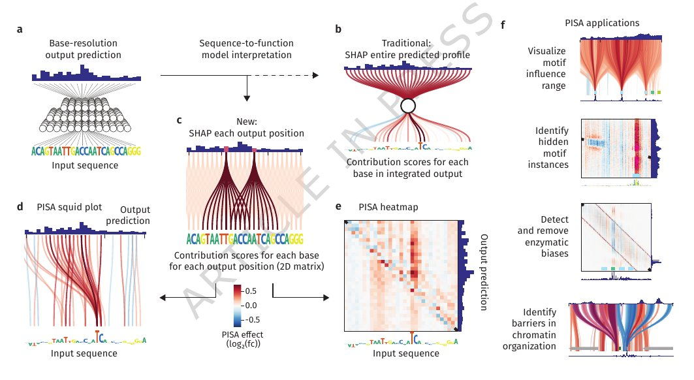
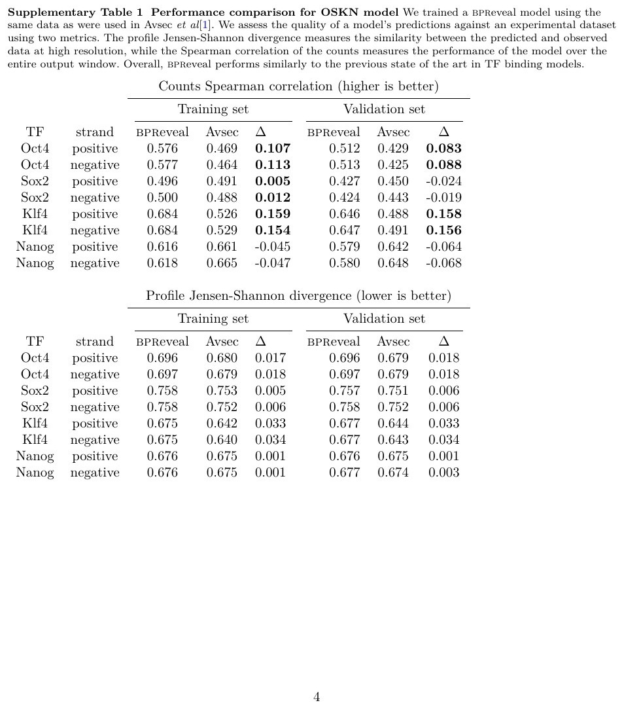
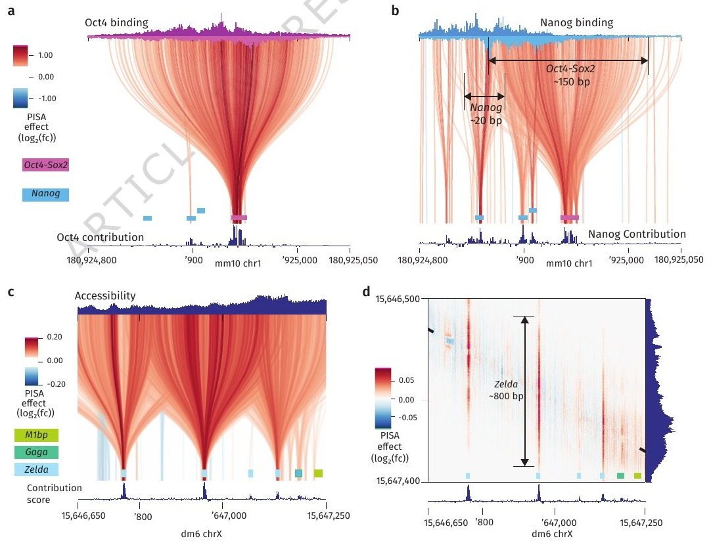
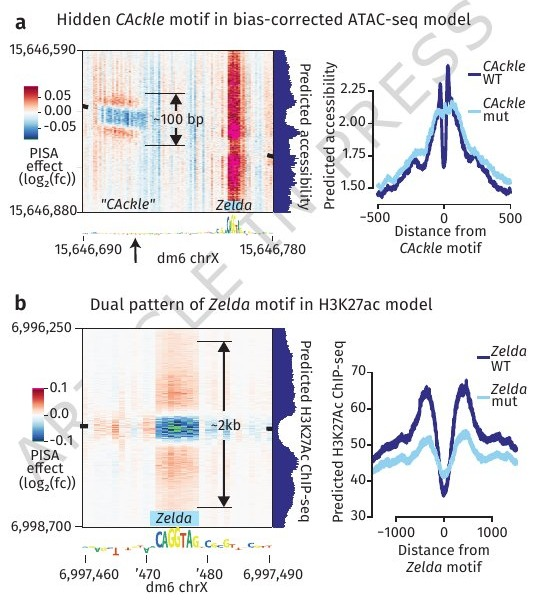
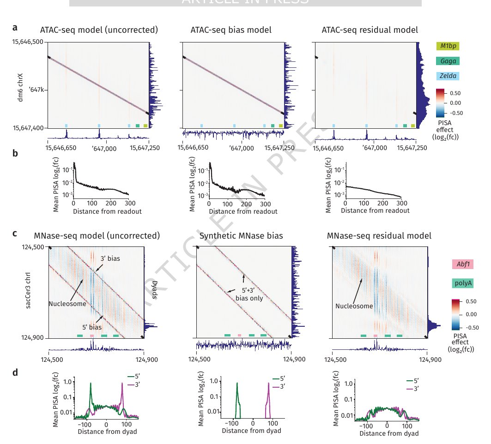
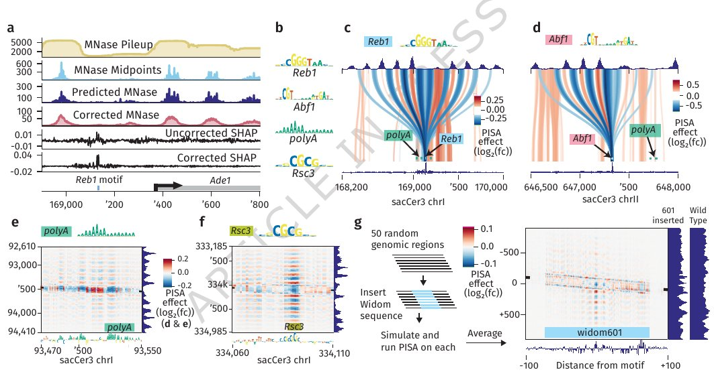
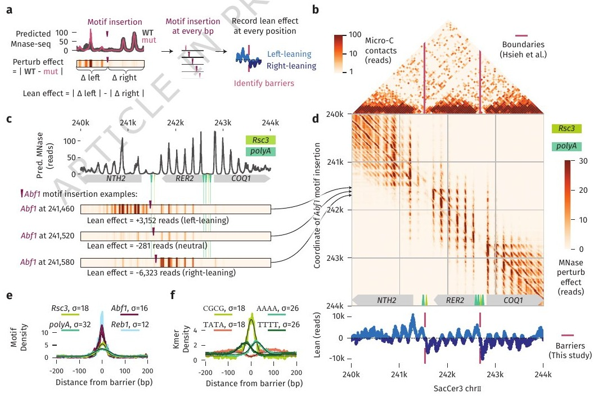
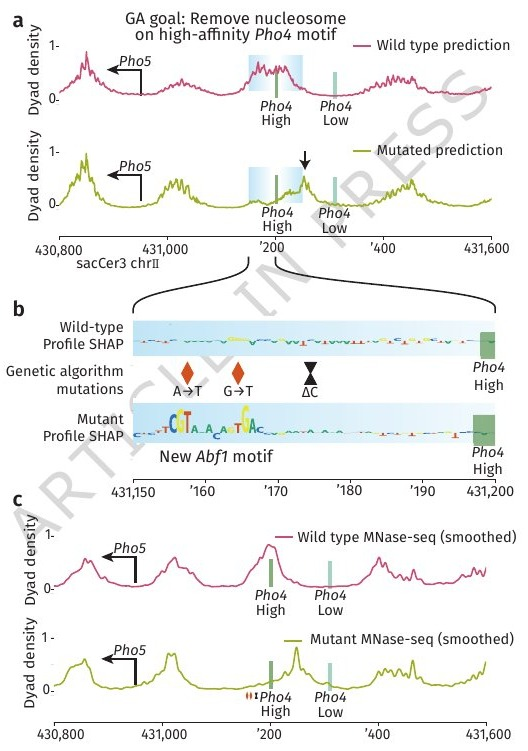

0. 阅读导引
这篇论文在做什么？
想象你在看一段DNA序列，想知道序列上的每一个碱基如何影响附近区域的生物学功能——比如哪些位置会结合转录因子（TF），哪些位置会被核小体覆盖。现有的深度学习模型虽然能从DNA序列预测这些功能，但解释"为什么模型做出了这个预测"一直是个难题。这篇论文提出了一种叫 PISA（pairwise influence by sequence attribution，逐对序列归因影响）的新方法，能像"显微镜"一样精确告诉你：输入序列的第 $i$ 个碱基，对输出信号的第 $j$ 个位置，贡献了多大的影响。
0.1 为什么这篇论文重要？
理解非编码DNA中的顺式调控密码（cis-regulatory code）是生物学的一大终极挑战。这篇论文做出了四个关键贡献：
- 方法创新：提出了PISA——一种将传统的一维归因（每个碱基一个分数）升级为二维"影响矩阵"（每个碱基→每个输出位置）的解释方法。
- 偏差发现：PISA能可视化和量化实验中的酶切偏差（enzymatic bias），特别是MNase-seq中长期困扰研究者的AT序列偏好。
- 生物发现：利用偏差校正后的核小体模型，de novo发现了决定核小体定位的TF motif（Abf1、Reb1、Rsc3、polyA），并揭示了它们长程振荡效应的范围。
- 工程应用：利用遗传算法设计了改变核小体配置的DNA序列，并通过CRISPR编辑+MNase-seq实验成功验证。
0.2 预备知识速览
核心概念一览
| 概念 | 说明 |
|---|---|
| 顺式调控密码（cis-regulatory code） | DNA非编码区中决定基因何时、何地、以何种水平表达的序列规则。由TF结合位点（motif）、核小体定位信号等组成。 |
| Sequence-to-function模型 | 以DNA序列为输入，预测基因组学实验读数（如ChIP-seq、ATAC-seq、MNase-seq）的深度神经网络。bpnet家族是其中的代表。 |
| 归因方法（Attribution） | 解释模型预测的方法：给定一个输入和输出，计算每个输入特征对输出的"贡献分数"。常用方法包括DeepSHAP、Integrated Gradients等。 |
| Shapley值 | 合作博弈论中的概念，用于公平分配"总收益"给每个参与者。在ML可解释性中，每个输入特征是一个"玩家"，Shapley值衡量其边际贡献。 |
| PISA（Pairwise Influence by Sequence Attribution） | 本文核心创新：对每个输出位置 $j$ 单独做归因，得到输入碱基 $i$ 对输出位置 $j$ 的影响矩阵 $P_{ij}$。 |
| 核小体（Nucleosome） | DNA缠绕组蛋白八聚体形成的结构单元，~147bp DNA缠绕约1.7圈。核小体占据的位置会影响TF的可及性。 |
| MNase-seq | 用微球菌核酸酶（MNase）消化未受核小体保护的DNA，测序后得到核小体占据图谱。但MNase有AT序列切割偏好，引入实验偏差。 |
| bpreveal | 本文配套发布的软件包，扩展了bpnet和chrombpnet的功能，支持多数据类型和多头多链架构，内含PISA计算和遗传算法模块。 |
0.3 与已有论文的关系
| 已有论文 | 关系类型 | 说明 |
|---|---|---|
| Tang et al. (2025) — LyMOI | 互补（Complements） | 两者都使用深度学习解读组学数据。LyMOI用GCN+LLM做基因功能预测，PISA用CNN做顺式调控解读。PISA的可解释性方法可作为LyMOI等模型的"下游分析工具"。 |
| Cui et al. (2025) — 多模态基础模型 | 互补（Complements） | Cui综述了多模态基础模型在分子细胞生物学中的应用前景。PISA正是这类模型急需的"可解释性基础设施"——让黑箱模型变得透明。 |
| Ghareeb et al. (2025) — ROBIN | 共享（Shared） | 共享AI驱动的科学发现范式。ROBIN用多智能体系统做假设生成，PISA用归因方法做机制解读——两者分别覆盖了科学发现循环中的"假设生成"和"机制验证"环节。 |
如果你是第一次接触深度学习在基因组学中的应用，建议先阅读 Cui et al. (2025) 多模态基础模型综述 的第1-2节，了解sequence-to-function模型的背景。如果你对AI驱动的科学发现有整体兴趣，可参考 Ghareeb et al. (2025) ROBIN 了解多智能体系统如何自动化科学推理。
0.4 符号约定
| 符号 | 含义 |
|---|---|
| $i$ | 输入DNA序列中的碱基位置 |
| $j$ | 输出预测profile中的基因组坐标 |
| $P_{ij}$ | PISA值：碱基 $i$ 对输出位置 $j$ 的Shapley贡献 |
| $P^{(I_5)}_{ij_5}$ | 理想模型中，碱基 $i$ 对5'端位置 $j_5$ 的贡献 |
| $P^{(M_5)}_{ij_5}$ | 实验模型中，碱基 $i$ 对5'端位置 $j_5$ 的贡献 |
| $P^{(B_5)}_{ij_5}$ | 偏差模型中，碱基 $i$ 对5'端位置 $j_5$ 的贡献 |
| $L_k$ | 位置 $k$ 处的lean值（正值=左倾，负值=右倾） |
| $\Delta$ | 核小体DNA长度（~179 bp） |
1. 引言：顺式调控密码与深度学习的交汇
1.1 生物学终极挑战：读懂非编码基因组
为什么非编码DNA如此重要？
人类基因组中只有约1.5%编码蛋白质，其余98.5%是非编码区。这些区域不是"垃圾DNA"，而是包含了精密的调控指令——决定哪些基因在何时、何地、以何种强度表达。这些指令被称为顺式调控密码（cis-regulatory code）。如果我们能完全读懂这些密码，就能：(1) 理解遗传变异如何导致疾病；(2) 设计合成调控序列用于治疗和工业。
1.2 Sequence-to-Function模型：从序列预测功能
近年来，sequence-to-function神经网络（sequence-to-function neural networks）成为破解顺式调控密码的突破口。这类模型以DNA序列为输入，经过训练后可以预测各种基因组学实验的读数，包括：
- TF结合（ChIP-seq/ChIP-nexus）
- 染色质可及性（ATAC-seq/DNase-seq）
- 核小体组织（MNase-seq）
- 转录起始（PRO-cap/CAGE）
- 基因表达（RNA-seq）
其中最具代表性的是 bpnet 家族模型——卷积神经网络在碱基分辨率下预测基因组学数据的profile（在每个位置的读数分布）和counts（总读数）。bpnet最初用于高分辨率TF结合数据，但其灵活的架构使其适用于多种数据类型。下面从深度学习视角把它彻底拆开。
什么是sequence-to-function模型？
一句话：输入是DNA序列，输出是该序列在某个实验中"会做什么"的数值预测。形式上，给定长度 $L$ 的序列 $\mathbf{x} \in \{A,C,G,T\}^L$，模型学习一个映射：
$$f_\theta(\mathbf{x}) = \hat{y}, \qquad \hat{y} = \text{某个基因组学实验读数的预测值}$$这里的 $f_\theta$ 具体实现为标准卷积神经网络（CNN，参数 $\theta$）：卷积、膨胀卷积、残差连接、多输出头——全部是深度学习教材里的现成构件，没有任何"生物学专用"的新算子。训练方式也是标准的有监督学习：收集海量「序列 → 实验读数」配对数据，最小化预测值与真实读数之间的损失。如果你熟悉深度学习，唯一"新"的东西只有三处：输入怎么编码（one-hot的4通道张量）、输出是什么形状（profile + counts两个头）、卷积核学到什么（motif）。
深度学习视角：把DNA当作一张"4通道图像"
在你熟悉的CNN里，图像是 $H \times W \times 3$（RGB三通道）；在sequence-to-function模型里，DNA是 $4 \times L$（A/C/G/T四个通道，每个位置one-hot编码，即每个碱基占一行、该行上对应字母的位置为1其余为0）。序列上的"模式"（motif）对应图像里的"纹理"（边缘、角点）——卷积核沿DNA滑动，就是在扫描序列里有没有特定TF的结合模式。图像CNN第一层学到边缘检测器；DNA CNN第一层学到motif检测器。此外，膨胀卷积、残差连接、多输出头——全都是你在ResNet/DeepLab里见过的老熟人，没有新奇的"生物学黑魔法"。
注意：motif检测器并不是预先"设计"进网络的。卷积核本身与图像CNN的核没有任何区别（同样是一个可训练的权重矩阵），只是在训练完成后，它的权重恰好收敛为某个TF的结合模式（如SPI1的 GAGGAA）——因为数据里正是这些模式决定了读数分布，网络学会把它们编码进核权重。这正如图像CNN的核训练后恰好长成边缘检测器，而不是被手工设定成那样。
bpnet架构逐层对照表
| 组件 | 深度学习对应物 | 在DNA语境下做什么 |
|---|---|---|
| 输入 $4 \times L$ one-hot | 4通道"1D图像" | 长度 $L$ 的序列，每个碱基（A/C/G/T）占一个通道，独热编码 |
| 标准卷积层（核宽~21bp） | 第一层卷积 | 在序列上滑动扫描motif：每个卷积核学习一个TF结合模式 |
| 膨胀卷积（dilation逐层翻倍）+ 残差连接 | DeepLab式空洞卷积 + ResNet捷径 | 感受野从21bp逐步扩展到覆盖整个输入窗口（~1000bp），捕获核小体尺度（~150bp）乃至更远的调控依赖，且不用堆几十层 |
| profile head | 逐位置分类头（类似语义分割的输出） | 对输出窗口的每个位置 $j$ 独立预测一个logit，softmax后得到"读数落在位置 $j$ 的概率分布" |
| counts head | 回归头 | 把整段序列的"总活性"压成一个标量（如总读数，用负二项似然训练） |
| 损失 = profile的多项式负对数似然 + counts的负二项似然 | 多任务损失 | 同时监督"读数的形状（分布在哪里）"和"读数的总量（有多强）" |
为什么PISA在乎profile head？因为profile head对每个输出位置独立预测——正是这一"可分性"让逐位置归因成为可能（见第2节）。传统方法只能对counts标量做归因，PISA的二维矩阵正是把profile head的逐位置输出逐个做归因得到的。
案例（一）：原始数据结构——一个训练样本长什么样
假设我们要预测转录因子SPI1（PU.1）在DNA上的结合。先看数据是怎么造出来的。
第一步：为什么不能直接用裸DNA序列？
DNA序列本身只是一串静态的字母——从序列上无法直接看出"哪个位置正在发生生物学事件"。功能是细胞状态依赖的：同一段序列在肝细胞里可能沉默，在免疫细胞里可能活跃。所以需要蛋白质这个中间媒介做"显影"：当转录因子（如SPI1）结合到DNA上，它就在序列上"标记"出了此时此刻有功能的位置。这正是ChIP系列实验的核心思想——用蛋白结合给DNA功能显影。
第二步：ChIP-nexus如何"显影"——五步走
- 交联（按下快门）：用甲醛把SPI1蛋白与DNA共价"钉"在一起，把这一瞬间的结合状态固定下来。
- 打断DNA：用超声把DNA打碎成小片段。被SPI1遮挡住的那一小段DNA受保护、不易被打断。
- 抗体钓取：用抗SPI1的抗体，像磁铁一样把所有"SPI1-DNA复合物"从混合物中沉淀出来——只保留被显影过的片段。
- 外切酶消化（ChIP-nexus分辨率高的秘诀）：用外切酶从DNA片段的5'端开始消化，一路"啃"到撞上SPI1蛋白才停住。于是每个片段的5'端精确标记了蛋白结合边界——这就是单碱基级分辨率的来源。
- 测序：把每个read的5'端位置读出来。
这里有两处容易搞反的地方，值得停下来想清楚：
- 酶切的对象始终是DNA，不是蛋白。蛋白的作用是"遮挡"——它挡住自己结合的那一小段DNA不被切开、不被消化，切口和消化停止点的位置由此间接标记了蛋白的位置。
- "读数多的地方"并不是"被切得多的地方"。在本实验中，读数峰标记的是"外切酶撞上SPI1停下来的地方"——即结合位点本身。不同实验的读数含义不同：MNase-seq里读数落在核小体之间（切得动的连接区），本案例ChIP-nexus里读数标记蛋白边界。共同的本质是：读数分布的形状编码了蛋白的位置。
把某个峰（peak）内所有reads的5'端位置堆起来，就得到一个位置-计数直方图：在输出窗口的每个碱基位置 $j$ 处，有 $c_j$ 个read的5'端落在那里——这个直方图就是模型要学习的标签profile的原始形态。
第三步：造输入
以峰中心为准截取1000bp序列，one-hot编码成 $4 \times 1000$ 张量（这个您已经熟悉）。
第四步：造标签（两个！）
- 标签1 — profile：那段1000bp上的位置-计数向量 $(c_1, c_2, \dots, c_{1000})$，如 $(0,0,3,0,7,2,\dots)$。它描述read的5'端落在哪些位置——这是"形状"信息。
- 标签2 — counts：总read数 $n = \sum_j c_j$，一个标量（如 $n = 213$）。它描述这段序列被SPI1结合的总强度——这是"总量"信息。
于是一个训练样本 = （$4 \times 1000$ 张量，1000维计数向量，1个标量）。收集几千个峰，就有几千个这样的三元组，这就是训练集。
为了后面看得清，我们用缩小的玩具版本：输出窗口只有6个位置，计数向量 $c = (0,\,1,\,0,\,4,\,2,\,0)$，总counts $n = 7$。这个玩具样本全程陪我们走完下面的讲解。
案例（二）："逐位置分类头"到底是什么
关键的一步视角转换：把每一个read看成一次独立"投票"，它的"类别"就是5'端的落点位置——位置1、位置2、……、位置1000，一共 $L_{out}$（如1000）个类别。于是"预测profile"就变成了一道分类题：给定序列，一个read最可能落在哪个位置？
profile head做的事正是解这道题：它对输出窗口的每个位置 $j$ 独立输出一个logit $z_j$，共 $L_{out}$ 个logit，经softmax后得到概率分布 $p_j$（"一个read落在位置 $j$ 的概率"）。
类比您熟悉的东西：
- ImageNet分类：输出1000个logit，softmax后 = 图片属于1000个类别的概率。这里只是把"类别"换成了"位置"——1000个logit，softmax后 = read落在1000个位置的概率。
- 语义分割：对每个像素预测类别。这里是对每个read的落点预测类别（位置）。"逐位置"三个字，说的就是输出向量的每个元素都对应一个独立预测的logit。
为什么用分类而不用回归一条连续曲线？因为标签本质是计数：非负整数、很多位置是0、总和有限。用多项式分布（multinomial）给"read落点"建模在统计上最自然；若让模型回归一条连续曲线，它会去拟合"7.3个read落在某位置"这种无意义的小数，还无法保证非负。玩具样本里 $c = (0,1,0,4,2,0)$：模型要学的就是"7个read投票投出的分布"的形状。
案例（三）：两个输出头与总损失函数
profile head 的输出与损失：
$$p_j = \frac{e^{z_j}}{\sum_{k=1}^{L_{out}} e^{z_k}} \quad (j = 1, \dots, L_{out}), \qquad \mathcal{L}_{\text{profile}} = -\sum_{j=1}^{L_{out}} c_j \log p_j$$$\mathcal{L}_{\text{profile}}$ 叫多项式负对数似然（multinomial NLL）。您一眼就能认出它：这就是以 $c_j$ 为权重的交叉熵——位置 $j$ 处有 $c_j$ 个read（相当于 $c_j$ 个标签为 $j$ 的样本），每个样本贡献 $-\log p_j$ 的损失。
玩具演示：设模型输出 logit $z = (0.1,\,0.8,\,0.2,\,2.5,\,1.6,\,0.05)$，softmax后 $p \approx (0.05,\,0.10,\,0.05,\,0.54,\,0.22,\,0.05)$。损失为
$$\mathcal{L}_{\text{profile}} = -(1 \cdot \log 0.10 + 4 \cdot \log 0.54 + 2 \cdot \log 0.22) \approx 7.8$$直觉：位置4有4个read（最多），模型给了它最高的概率0.54——该项损失小；位置2只有1个read，概率只有0.10——该项损失大。训练就是把概率质量向read集中的位置挤压。预测分布与真实计数分布越接近，损失越小。
counts head 的输出与损失：输出总读数 $n$ 的预测（bpnet实际输出负二项分布（negative binomial）的均值 $\hat{\mu}$ 与离散参数 $\hat{\theta}$——负二项是泊松的"过离散"版，允许方差大于均值，更适合生物学计数数据）。损失为负二项似然：
$$\mathcal{L}_{\text{counts}} = -\log P_{\text{NB}}(n; \hat{\mu}, \hat{\theta})$$为什么需要counts head？因为profile只描述形状（reads分布在哪些位置），不描述总量。同样是 $c = (0,1,0,4,2,0)$ 的形状，可能是 $n=7$（弱结合）也可能是 $n=700$（强结合）——profile归一化后两者形状相同，counts head负责把它们区分开。
总损失 = 两个头的损失加权和（多任务学习）：$\mathcal{L} = \mathcal{L}_{\text{profile}} + \lambda \cdot \mathcal{L}_{\text{counts}}$，反向传播更新参数——到这一步就和训练任何CNN完全一样了。
案例（四）：推理与下游应用——模型学完之后能干什么
推理：给一段新序列，模型同时输出两个预测——"哪里会被结合"（预测profile，如中段鼓出一个峰 = 中心motif处大概率结合）和"结合多强"（预测counts）。若预测profile整体接近零，则这段序列没有SPI1结合位点。
下游应用1 — 预测变异的功能效应：把某个SNP写进序列（改一个碱基，其余不动），重跑模型对比预测。若预测counts大幅下降，说明该变异破坏了SPI1结合——这就是"从序列预测功能"落地的标准用法：在硅片中给基因组上每个变异打"功能影响分"，筛出候选致病突变，再送去做湿实验验证。
下游应用2 — 模型可解释性（本文PISA的入口）：训练完后可以可视化第一层卷积核，发现某个核的权重与已知SPI1 motif（PU.1 box核心 GAGGAA）吻合——它就是"SPI1 motif检测器"（详见第2节的PISA归因方法）。
换成你熟悉的说法：这就是一个"输入4通道1D图像、输出1000类位置分类+计数回归的多任务CNN"，训练目标 = 让预测的read落点分布与真实计数分布尽量一致（加权交叉熵）+ 让预测的总读数尽量准确（负二项似然）。唯一的领域知识只有两条——DNA用4字母编码、motif是序列上的局部模式。
bpnet模型的"从序列预测功能"思路与 Tang et al. (2025) LyMOI 的GCN+LLM混合架构形成了有趣的对比：LyMOI侧重基因功能的全局推断，而bpnet侧重碱基分辨率的局部调控解读。两者分别从"宏观"和"微观"两个尺度解码基因组信息。
1.3 现有方法的局限性：归因的"一维困境"
虽然sequence-to-function模型预测能力强大，但解释模型学到了什么规则一直是瓶颈。目前主流的归因方法（如DeepSHAP、DeepLIFT、Integrated Gradients）存在三个关键局限：
传统归因方法的三大盲区
- 缺乏空间分辨率：传统归因将整个输出窗口的贡献汇总为一个分数，不告诉你motif在profile的哪个位置发挥了作用，影响的范围有多大。
- 正负效应相互抵消：一个motif可能在某些位置产生正向影响、在另一些位置产生负向影响。汇总后正负抵消，导致motif被"隐藏"而无法被发现。
- 实验偏差与生物信号混杂：基因组学数据的酶切偏差（如MNase的AT偏好）会被模型学习，混入生物学信号中，传统归因难以区分。
偏差抵消如何隐藏motif
假设一个CA重复序列motif在增强子中心产生负影响（降低染色质可及性），在两侧产生正影响（提高可及性）。传统归因汇总后，正负相抵≈0——这个功能重要的motif在归因分数中完全不可见。PISA通过二维矩阵保留每个位置的贡献，正负效应一目了然。
1.4 本文的解决方案：PISA
本文提出了 PISA（pairwise influence by sequence attribution），核心思想简单而优雅：对输出profile的每一个基因组位置 $j$ 单独进行归因，得到输入碱基 $i$ 对每个输出位置的贡献矩阵 $P_{ij}$。这个二维矩阵揭示了：
- motif影响的空间范围（窄 vs. 宽）
- motif影响的符号模式（正/负/混合）
- 实验偏差的对角线特征（局部酶切偏好）
什么是"局部酶切偏好"？——一把"挑食的剪刀"
MNase-seq、ATAC-seq、ChIP-nexus 这类实验读取信息的方式，都是用酶把DNA切开：酶在DNA上留下切口，测序仪再把切口位置读出来，读数多的地方就被解释为"那里有生物学事件"（TF结合、核小体边界等）。
问题在于，酶不是对任何序列一视同仁的剪刀——它是"挑食"的：
- MNase（微球菌核酸酶）偏爱在AT富集的序列上下文（如AT/TA二核苷酸处）下刀；
- Tn5转座酶（ATAC-seq所用）也有自己的序列偏好。
于是位置 $j$ 处读数多，可能有两种完全不同的原因：① 真的有生物学信号（TF在那里结合）；② 只是那个位置的碱基组合"好切"——纯粹是酶的偏好，与生物学无关。第二种就是酶切偏好（enzymatic cleavage bias）造成的伪影。
"局部"的含义：酶切偏好只取决于切口处紧邻的1-2个碱基。位置 $j$ 好不好切，看一眼 $j$ 附近的碱基就够了，与 20bp 外的序列无关。
为什么必须处理它：模型训练时会学到这条伪相关——"见到某碱基组合 → 预测那里有读数"，即使与生物学毫无关系。这就像图像模型在"所有狗都站在草地上"的数据集里学会"草地 → 狗"：偏差信号会污染后续一切分析（motif发现、核小体定位规则、序列设计）。
PISA如何"拆"出对角线？——5×5玩具矩阵演示
机制拆成三步理解：
- 逐位置归因：PISA对输出profile的每个位置 $j$ 单独做归因，于是 $P_{ij}$ 完整记录了"输入碱基 $i$ → 输出位置 $j$"的配对贡献（传统方法则把每个输入位置对所有输出的贡献加总成1个分数，配对结构被压平丢失）。
- 酶切偏好是局部的：输入碱基 $i$ 只影响它正下方的输出位置（$i \approx j$）→ 贡献只出现在矩阵的对角线上。
- motif是远程的：序列中部一个motif影响输出窗口大范围的读数 → 同一个输入位置 $i$ 在大量输出位置 $j$ 上都有贡献 → 表现为垂直条纹。
玩具演示（行 = 输出位置 $j$，列 = 输入碱基 $i$；假设所有位置都有 $+0.4$ 的酶切偏好，且输入位置3处有一个motif，使输出位置1-5的读数分别增加 $0.6, 0.8, 0.8, 0.5, 0.3$）：
| Pij | 输入1 | 输入2 | 输入3 | 输入4 | 输入5 | 一维归因 （列求和） |
|---|---|---|---|---|---|---|
| 输出1 | +0.4 | 0 | +0.6 | 0 | 0 | +0.4 |
| 输出2 | 0 | +0.4 | +0.8 | 0 | 0 | +0.4 |
| 输出3 | 0 | 0 | +1.2 | 0 | 0 | +3.4 |
| 输出4 | 0 | 0 | +0.5 | +0.4 | 0 | +0.4 |
| 输出5 | 0 | 0 | +0.3 | 0 | +0.4 | +0.4 |
（橙色 = 对角线上的酶切偏好；蓝色 = motif的垂直条纹。注意 $P_{33}=+1.2$ 是两者叠加：偏差 $+0.4$ + motif对正下方输出的影响 $+0.8$。）
一维视角的困境：把每行加总（传统归因），得到 $(0.4,\,0.4,\,3.4,\,0.4,\,0.4)$。输入位置3分数最高——motif确实被看见了。但输入1/2/4/5的 $+0.4$ 到底是"酶切偏好"还是"弱生物学信号"？完全无法分辨；而且motif影响的正负、范围和形状信息全部丢失。
二维视角的威力：矩阵中两种模式一目了然——整条对角线是系统性偏差（每个位置都有的局部伪影，可以识别并扣除）；第3列垂直条纹是motif的空间影响模式（影响哪些输出位置、各有多强）。只有拆到这个粒度，偏差才谈得上被分离。
论文正是沿这条思路完成了MNase-seq的偏差校正：量化对角线信号（BAT plot）→ 构造偏差模型 → 扣除后得到干净的生物学信号，详见第5节。
引言核心信息：(1) 顺式调控密码的破解依赖sequence-to-function模型；(2) 现有归因方法缺乏空间分辨率，正负效应可能抵消，偏差信号混杂；(3) PISA通过二维影响矩阵解决了这些问题，为下游发现（motif可视化、偏差分离、核小体定位规则、序列设计）奠定了基础。
2. PISA 核心方法：从逐碱基归因到配对影响矩阵
2.1 Sequence-to-Profile模型的结构特性
关键洞察：profile预测的"可分性"
bpnet类模型的一个关键特性是：它们对每个输出位置 独立地 做出预测。这意味着模型的输出是一个向量，每个元素是该位置的对数概率（logit）。PISA的核心洞察是利用这一特性——既然每个输出位置是独立预测的，我们就可以对每个输出位置单独进行归因分析。
形式上，对于一个输入序列，bpnet模型为输出窗口中的每个碱基 $j$ 预测一个profile logit值。传统方法（图1b）对整个输出窗口聚合后的某个指标（如总counts）做归因，每个输入碱基得到一个分数。PISA（图1c）则对每个输出位置 $j$ 单独做DeepSHAP归因，得到二维矩阵：
$$\text{PISA矩阵： } P_{ij} = \text{碱基 } i \text{ 对输出位置 } j \text{ 的Shapley贡献}$$上文提到的"图1b"与"图1c"出自原论文的 Figure 1（PISA 方法总览图），完整原图如下：

原论文 Figure 1：PISA 及其应用总览。(a) sequence-to-profile 模型：以DNA序列为输入，预测基因组实验读数（每个输出位置一个预测值）。(b) 传统方法：对整个输出profile聚合后的指标（如总counts）做归因，每个输入碱基只得到一个分数——即网页上文所述的"一维困境"。(c) PISA：对每个输出位置 $j$ 单独做DeepSHAP归因，每个输入碱基 $i$ 对每个输出位置 $j$ 都得到一个贡献值，组成二维矩阵 $P_{ij}$。(d) Squid plot：以彩色连线展示输入碱基对输出位置的贡献。(e) PISA heatmap：同一区域的二维贡献热图（对角线处可见实验偏差特征）。(f) PISA 在 bpreveal 软件包中的实现及其下游应用（motif影响范围可视化、隐藏motif发现、酶切偏差检测与去除、染色质屏障识别）。
图源：McAnany et al., Nature Communications (2026), CC BY 4.0。
PISA矩阵的数学定义
对于输入序列长度为 $L_{\text{in}}$、输出profile长度为 $L_{\text{out}}$ 的模型，PISA矩阵 $P$ 是一个 $L_{\text{out}} \times L_{\text{in}}$ 的二维数组。其中元素 $P_{ij}$ 表示：使用DeepSHAP计算的、输入碱基 $i$ 对模型在输出位置 $j$ 的logit预测值的Shapley贡献。
DeepSHAP使用随机打乱的序列作为参考背景（reference），可选用ushuffle算法保持kmer频率。
2.2 PISA的两种可视化方式
为了直观展示 $P_{ij}$ 矩阵，论文设计了两种可视化方式：
Squid Plot（鱿鱼图）
以DNA序列在底部、预测profile在顶部。对于每个输入碱基 $i$ 和输出位置 $j$，如果 $|P_{ij}|$ 超过阈值，则画一条彩色连线：红色表示正向贡献，蓝色表示负向贡献。线的密集程度和颜色反映了影响的方向和范围。
Squid Plot读法
如果一个TF motif在序列中间，而红色线条像鱿鱼触手一样向左右展开约150bp，说明这个motif的影响范围约为150bp（约一个核小体的宽度）。如果线条仅局限在motif自身位置附近（~20bp），说明影响是局部的，可能不涉及染色质变化。
PISA Heatmap（热图）
将整个PISA矩阵表示为二维彩色网格：x轴是输入碱基位置 $i$，y轴是输出位置 $j$，每个像素的颜色表示 $P_{ij}$ 的值（红正蓝负）。右侧显示输出预测profile，下方显示传统一维贡献分数。
热图的对角线意味着什么？
在PISA热图中，对角线（$i \approx j$）上的信号代表"局部影响"——输入碱基影响其正下方（同位置）的输出。这通常是实验偏差的特征：酶切偏好只影响非常局部的读数。相反，垂直条纹（同一输入位置影响多个输出位置）代表TF motif的"远程影响"，通常是生物学信号的标志。
PISA计算流程（简化伪代码）
输入: 训练好的bpnet模型, 基因组区域 [j - buf, j + outputLength + buf]
输出: PISA矩阵 P (Lout × Lin)
1. buf = (inputLength - outputLength) / 2
2. sequence = genome[j - buf : j + outputLength + buf]
3. 选择目标: model.outputs[headID][0, strandID]
4. explainer = shap.DeepExplainer((model.input, target), 随机打乱参考)
5. shapValues = explainer.shap_values(sequence)
6. for i in range(j - buf, j + buf):
P[i - j + buf, j] = sum(shapValues[i - j + buf])
2.3 bpreveal软件包
PISA被实现在 bpreveal 软件包中。bpreveal扩展了bpnet和chrombpnet的能力，关键改进包括：
- 多任务训练：同时预测多种数据类型（ChIP-seq、ATAC-seq、MNase-seq、PRO-cap）
- 多头多链架构：一个实验的正负链可以合并为一个输出
- 偏差回归：基于chrombpnet的策略，训练偏差模型后冻结权重，再训练残差模型
- 非线性偏差变换：$f(\ln(P_{\text{bias},i})) + \ln(P_{\text{biology},i}) = \ln(P_{\text{experiment},i})$，其中 $f(x) = w_1 \cdot \text{sigmoid}(w_2 x + w_3) + w_4$
- 遗传算法：在给定序列上搜索最小突变集合以优化用户定义的适应度函数
值得注意的是，PISA值不仅限于DeepSHAP计算——论文也实现了基于饱和突变（saturation mutagenesis）的PISA计算（Supplementary Figure 1），并在tangermeme（PyTorch工具套件）中提供了替代实现。
PISA方法核心：(1) 利用sequence-to-profile模型每个输出位置独立预测的特性；(2) 对每个输出位置单独做DeepSHAP归因；(3) 得到二维影响矩阵 $P_{ij}$；(4) 通过squid plot和heatmap两种方式可视化；(5) 实现在bpreveal软件包中，支持多种模型架构和数据类型。
3. PISA 揭示TF motif的影响范围
3.1 先锋因子 vs. 非先锋因子：不同的影响半径
同一个增强子上，不同TF的"势力范围"不同
在小鼠胚胎干细胞（mESC）的Lefty1增强子上，Oct4-Sox2复合motif的影响范围约150bp——足以覆盖一个核小体的宽度。而Nanog motif的影响范围仅约20bp，局限在其结合足迹附近。这种差异反映了它们不同的作用机制：Oct4/Sox2是先锋因子（pioneer TF），能直接打开染色质；Nanog是非先锋因子，需要染色质已经开放才能结合。
论文首先在已充分研究的系统——小鼠胚胎干细胞中的Oct4、Sox2、Klf4、Nanog（OSKN）ChIP-nexus数据——上验证了PISA的有效性。bpreveal模型在这些数据上的表现与原版bpnet模型相当（Supplementary Table 1）。

原论文 Supplementary Table 1：OSKN 模型的性能对比（bpreveal 用与 Avsec et al. 相同的 OSKN ChIP-nexus 数据训练，与原版 bpnet 模型逐项比较）。两个评估指标：① Profile Jensen-Shannon 散度（JS divergence，越低越好）——逐碱基比较预测读数分布与实验读数的相似度，衡量高分辨率的"形状"拟合；② Counts Spearman 相关（越高越好）——比较整个输出窗口总读数的预测排序，衡量窗口级的"总量"拟合。表格按 TF（Oct4/Sox2/Klf4/Nanog）× 链（正/负）× 训练集/验证集分块给出两模型各自得分。总体结论：bpreveal 与此前最先进的 TF 结合模型表现相当——这保证了本文全部 PISA 分析建立在可靠的预测基础之上。
图源：McAnany et al., Nature Communications (2026) Supplementary Information, CC BY 4.0。
Oct4结合：150bp的宽泛影响
在Lefty1增强子区域，PISA squid plot显示Oct4-Sox2 motif引导Oct4结合的足迹覆盖了约150bp的窗口。对800个Oct4-Sox2 motif实例的统计确认了这一宽泛效应模式。
Nanog结合：Oct4-Sox2的远程助攻 + 自身的局部效应
更有趣的是Nanog结合的分析（图2b）：虽然Nanog本身是非先锋因子，但其结合受到Oct4-Sox2 motif的远程促进（~150bp范围），而Nanog自身的三个motif仅产生局部影响（~20bp）。
影响范围大小的生物学含义
| 影响范围 | 可能的机制 | 示例 |
|---|---|---|
| ~20 bp（局部） | 直接TF-DNA结合，不改变染色质状态 | Nanog |
| ~150 bp（一个核小体） | 涉及核小体驱逐/重定位 | Oct4-Sox2 |
| ~800 bp（多个核小体） | 大规模染色质重塑 | Zelda（果蝇） |
| ~2 kb（结构域级别） | 影响整个增强子区域的组蛋白修饰 | Zelda → H3K27ac |
3.2 果蝇胚胎中的Zelda：先锋因子的远程效应
在果蝇早期胚胎的偏差校正ATAC-seq模型中，PISA热图显示sog shadow增强子上的三个Zelda motif产生了宽大的垂直条纹，中央Zelda motif的影响范围达到了约800bp（图2d）。这与Zelda作为关键先锋因子在合子基因组激活（ZGA）中大规模打开染色质的生物学功能高度一致。

原论文 Figure 2：用PISA可视化motif的影响范围。(a) Lefty1增强子处Oct4-Sox2 motif（紫色）决定Oct4在约150bp宽窗口内的结合（双链PISA squid plot叠加显示）。(b) Nanog结合分析（网页正文引用处）：Oct4-Sox2 motif远程促进（~150bp），Nanog自身motif仅局部影响（~20bp）。(c,d) 果蝇sog shadow增强子上三个Zelda motif产生宽大垂直条纹，中央motif影响范围约800bp（网页正文引用处）。
图源：McAnany et al., Nature Communications (2026), CC BY 4.0。
PISA揭示的"影响范围"概念与 Cui et al. (2025) 讨论的多模态模型中的"跨模态注意力范围"有概念上的相似之处——两者都在度量"一个输入元素能影响多少个输出元素"。在某种意义上，PISA的二维矩阵 $P_{ij}$ 可以看作一种"生物学注意力图"。
motif影响范围的关键发现：(1) PISA直接可视化单个基因座上的motif影响范围；(2) 先锋因子（Oct4-Sox2、Zelda）产生宽泛影响（150-800bp），反映了染色质重塑效应；(3) 非先锋因子（Nanog）产生局部影响（~20bp）；(4) 影响范围的大小为推断motif是否涉及染色质变化提供了线索。
4. PISA 发现复杂motif效应：正负混合的隐藏信号
4.1 CAckle：一个被传统方法"隐藏"的调控motif
CA重复序列的双重身份
在果蝇sog增强子的ATAC-seq数据中，PISA热图揭示了一个有趣模式：中央蓝色（负贡献）被两侧红色（正贡献）包围，而最下方的传统一维贡献分数几乎为零。这就像一个跷跷板——正负效应精确平衡，汇总后完全消失。这个CA重复序列（命名为CAckle）在染色质可及性中产生了一个局部的"凹陷"，此前因为正负抵消而未被发现。
CAckle的效应模式包括：
- 在motif中心约50bp范围内降低染色质可及性（产生"凹陷"）
- 在凹陷两侧的肩部区域提高染色质可及性
- 总效应范围约100bp（远小于Zelda的~800bp）
为了验证CAckle的功能，论文对712个CAckle motif进行了模拟突变：突变后凹陷和肩部效应消失，但总reads数基本不变——证实了正负混合效应的真实性。
为什么CAckle重要？
CA重复序列此前已被证明能增强TF结合和增强子活性（Horton et al., 2023; Yañez-Cuna et al., 2014）。但传统方法难以在全基因组范围内系统地发现CAckle位点。PISA不仅揭示了其效应模式，还使得通过tf-modisco进行全基因组motif发现成为可能——因为虽然每个CAckle的正负贡献相消，但并非所有实例都精确中性，那些略有偏向的实例足以让motif发现算法检测到它们。
4.2 H3K27ac：Zelda的组蛋白修饰双重效应
对果蝇早期胚胎H3K27ac ChIP-seq数据的模型揭示了一个更大尺度的正负混合模式（图3b）：Zelda motif在增强子中心产生H3K27ac的负贡献（蓝色，表示核小体缺失区域），在两侧的核小体上产生正贡献（红色，表示组蛋白乙酰化）。

原论文 Figure 3：两个正负混合效应的motif。(a) 偏差校正ATAC-seq模型中隐藏的CAckle motif：中心蓝色（负贡献，染色质可及性凹陷）被两侧红色（正贡献）包围，总效应约100bp；模拟突变后凹陷与肩部效应消失（网页正文引用处）。(b) H3K27ac模型中Zelda motif的双重模式：增强子中心负贡献（核小体缺失区）+ 两侧核小体正贡献（乙酰化），范围达约2kb；Zelda突变实验证实侧翼H3K27ac水平下降。
图源：McAnany et al., Nature Communications (2026), CC BY 4.0。
Zelda的双重角色
Zelda作为先锋转录因子，做了两件事：(1) 在增强子中心驱逐核小体（所以H3K27ac在中心降低——因为没有核小体可供乙酰化）；(2) 招募乙酰转移酶Nejire（CBP/p300同源物）乙酰化两侧核小体的H3K27。一个motif，两种效应，一个2kb范围的影响。
突变325个Zelda motif的实验证实：突变降低了侧翼的H3K27ac水平，同时使中心凹陷变浅。有趣的是，Zelda在H3K27ac模型中的效应模式与CAckle在ATAC-seq中的模式形状相似但尺度差了约20倍（2kb vs. 100bp），表明PISA不仅能检测效应模式，还能提供关于效应尺度的定量信息。
复杂motif效应的关键发现：(1) PISA能发现传统方法因正负抵消而遗漏的motif（CAckle）；(2) 正负混合模式本身具有生物学意义——反映motif在不同空间位置产生不同效应；(3) PISA提供的空间尺度信息有助于推断潜在机制（如Zelda 2kb效应对应增强子级染色质修饰）；(4) CAckle和H3K27ac的案例共同证明了PISA在"发现未知motif"方面的能力。
5. PISA 检测实验偏差并实现MNase-seq偏差校正
5.1 偏差的对角线特征
为什么偏差信号在对角线上？
酶切偏差是局部的——MNase在某个位置切割DNA的偏好只取决于该位置附近的几个碱基。因此在PISA热图中，偏差信号表现为沿对角线（$i \approx j$）的窄带，因为只有输入位置$i$附近的碱基才会影响输出位置$j$的酶切行为。相比之下，生物学信号（如TF motif）影响的是整个核小体的行为（包括其5'和3'端），因此表现为垂直条纹。
论文首先在ATAC-seq偏差校正模型中验证了这一概念（图4a）：
- 未校正模型：PISA热图同时显示对角线偏差带和垂直Zelda motif条纹
- 偏差模型（在闭合染色质区域训练）：只有对角线带，无motif条纹
- 残差模型（偏差校正后）：只有Zelda motif条纹，对角线带消失

原论文 Figure 4：PISA 揭示酶切偏差。(a) chrombpnet式偏差校正策略：未校正模型的PISA热图同时含对角线偏差带与Zelda motif垂直条纹；纯偏差模型只有对角线带；残差模型（校正后）只剩motif条纹、对角线带消失（网页正文引用处）。(b) 各模型的BAT plot：偏差强的模型在 $\delta \approx 0$ 处有尖锐峰值。(c,d) MNase-seq模型：合成偏差轨道与偏差校正后的残差模型对比（5'端/3'端偏差分量、校正前后距dyad各位置的贡献分布）。
图源：McAnany et al., Nature Communications (2026), CC BY 4.0。
5.2 BAT Plot：量化偏差信号
为了定量度量偏差强度，论文引入了 BAT（Base Attribution Total）plot：
$$\text{BAT}(\delta) = \text{mean}_i(P_{i, i+\delta})$$其中 $\delta$ 是偏离对角线的距离。BAT plot展示了每个输入碱基对距其 $\delta$ 远的输出位置的平均贡献。偏差强的模型在 $\delta \approx 0$ 处出现尖锐峰值，偏差校正后的模型则无此峰值。
5.3 MNase-seq偏差的独特挑战与巧妙解决方案
MNase-seq偏差校正的难点
ATAC-seq可以用闭合染色质区域训练纯偏差模型（这些区域有酶切偏差但没有TF结合信号）。但MNase-seq不同——没有天然的"核小体自由"区域可以用来单独训练偏差。而且MNase有强烈的AT序列偏好，这种偏好与影响核小体定位的序列特征（如polyA）天然重叠，极难分离。
论文提出了一套精妙的两步策略来构造合成偏差轨道：
第一步：利用双链预测的不对称性提取偏差
关键洞察：bpreveal模型同时预测MNase片段的5'端和3'端位置。对于一个理想的核小体（无偏差），碱基 $i$ 对5'端位置 $j_5$ 的贡献应等于其对3'端位置 $j_3$ 的贡献（因为核小体作为一个整体被影响）：
$$P^{(I_5)}_{ij_5} = P^{(I_3)}_{ij_3}$$但在有酶切偏差的真实MNase-seq中，碱基 $i$ 对5'端的影响还包含了酶切偏好。如果 $i \approx j_5$（即碱基 $i$ 靠近5'端），那么：
$$P^{(M_5)}_{ij_5} = P^{(I_5)}_{ij_5} + P^{(B_5)}_{ij_5}$$ $$P^{(M_3)}_{ij_3} = P^{(I_3)}_{ij_3} + 0 \quad \text{（因为 } i \text{ 远离3'端）}$$因此，通过对齐并相减两个链的PISA热图，可以分离出纯偏差信号。
MNase偏差提取算法（简化）
输入: P3 (3'端PISA热图), P5 (5'端PISA热图), strand 输出: 合成偏差profile 1. 选择偏移量 Δ=179bp (约一个核小体的DNA长度) 2. if strand=="3'": P5Shift = shiftLeft(P5, Δ); difference = P3 - P5Shift 3. if strand=="5'": P3Shift = shiftRight(P3, Δ); difference = P5 - P3Shift 4. 仅保留 |i-j| ≤ 13bp 的对角线附近信号（偏差是局部的） 5. biasLogits = sumRows(difference) 6. bias = softmax(biasLogits) 7. return bias
第二步：训练偏差模型和残差模型
获得合成偏差轨道后，按照chrombpnet策略：(1) 训练纯偏差模型预测合成偏差轨道；(2) 冻结偏差模型权重；(3) 训练残差模型学习偏差校正后的核小体信号。PISA热图和BAT plot均确认偏差信号被成功移除（图4c,d）。
偏差校正的效果
在校正前，核小体Midpoint轨道呈现尖锐的"刺状"噪音——这其实是MNase局部AT偏好的体现。校正后的轨道变得平滑，真实的核小体定位模式浮现出来。在Ade1基因座（酵母遗传标记），校正后才清楚看到Reb1 motif的贡献信号。
论文将PISA偏差校正方法与其他方法进行了比较（Supplementary Figure 8）：
- 裸DNA MNase-seq偏差模型：减少了部分偏差信号
- seqOutBias统计校正：效果更好，但仍残留偏差
- PISA合成偏差：偏差去除最彻底，BAT plot无对角线峰值
而且，仅需约1,500个区域即可训练出高质量的偏差模型，大大降低了基因组范围PISA计算的成本。
偏差检测与校正：(1) 偏差信号在PISA热图中表现为对角线带；(2) BAT plot提供偏差强度的定量度量；(3) MNase-seq偏差通过双链对齐相减策略巧妙分离；(4) PISA合成偏差方法优于裸DNA偏差模型和seqOutBias；(5) 仅需~1,500区域即可训练有效的偏差模型。
6. 偏差校正模型 de novo 发现核小体定位motif
6.1 偏差校正前后的motif发现对比
清洗"镜头"后看到了什么？
偏差就像是相机镜头上的污渍——偏差校正前，你看到的"信号"大部分其实是污渍（酶切偏好）的形状。校正后，真实的生物信号才清晰可见：之前被偏差噪音淹没的TF motif——Abf1、Reb1、Rsc3、polyA——浮现出来，每一个都在核小体定位中扮演着精确定义的角色。
使用tf-modisco在三种模型上分别进行motif发现：
- 偏差模型：只学到AT→GC过渡序列（已知的MNase酶切偏好）
- 未校正模型：学到生物相关motif，但混杂大量偏差motif，难以区分
- 偏差校正模型：学到清晰可辨的生物学motif：Abf1、Reb1、polyA、CG-rich序列、CGCG
6.2 四种核小体定位motif的特征
四种motif的效应模式
| Motif | 效应强度 | 效应范围 | 效应模式 | 发现数量 |
|---|---|---|---|---|
| Reb1 | 强 | ~750bp (4-5核小体) | 振荡、双向、有时倾斜 | 760 |
| Abf1 | 强 | ~750bp (4-5核小体) | 振荡、双向、有时倾斜 | 656 |
| Rsc3 (CGCG) | 中等 | ~300-500bp | 弱振荡、位置较分散 | 1,543 |
| polyA | 弱 | ~200-400bp | 分散、弱振荡、多个A簇联合作用 | 12,791 |
Reb1和Abf1：强核小体定位因子
PISA squid plot显示Reb1和Abf1 motif在基因组上产生强烈的振荡效应——从motif位置向外辐射约750bp，覆盖4-5个核小体的位置。一个醒目的特征是效应的倾斜性（leaning）：某些motif实例的效应明显偏向一侧（如仅向左影响核小体排列），暗示了附近的序列元件可能构成"屏障"限制效应的传播。
Rsc3（CGCG）：染色质重塑复合物的识别信号
CGCG motif是RSC（Remodels the Structure of Chromatin）重塑复合物中Rsc3亚基的识别序列。虽然每个Rsc3 motif的效应比Reb1/Abf1弱且更局部分散，但由于其数量多（1,543个），总体贡献仍然显著。PISA揭示的Rsc3效应模式通常与附近的多聚A序列联合作用。
polyA：前基因组时代的"隐形"核小体排斥序列
polyA序列（多聚dA:dT）是核小体定位中最引人注目的发现。它信息含量低（仅有A碱基的重复），传统motif扫描方法极难区分功能性polyA和随机出现的A重复。模型成功捕获了12,791个功能性polyA实例——远超传统扫描的能力——表明模型学到了超越单个motif的组合序列上下文。
为什么polyA排斥核小体？
polyA序列（dA:dT双链）具有特殊的物理化学性质：比一般DNA更"僵硬"——不容易弯曲缠绕在组蛋白上。这在结构上使得polyA区域不利于核小体形成，从而在polyA序列两侧创造出核小体定位的"相位"参照点。
6.3 Widom 601序列：体外 vs. 体内的差异
作为对照，论文将经典的Widom 601序列（体外实验中强核小体定位序列）插入50个随机基因组位置进行PISA分析（图5g）。结果显示601序列的效应非常微弱——甚至弱于polyA。这与之前的实验证据一致：601序列在体内并不有效定位核小体。这一发现强调了体内外实验的根本差异——体内核小体定位更多由TF motif和染色质重塑因子驱动，而非DNA的固有弯曲偏好。

原论文 Figure 5：偏差校正后的MNase-seq模型从头（de novo）发现核小体定位motif。(a,b) 偏差校正前后模型预测的MNase pileup与midpoint轨道对比（含合成偏差轨道、5'/3'偏差分量）。(c–f) 模型学到的四种核小体定位motif：Reb1/Abf1（~750bp强振荡效应）、Rsc3（CGCG）、polyA（效应弱但数量多）。(g) Widom 601序列的体内效应非常微弱（网页正文引用处）。
图源：McAnany et al., Nature Communications (2026), CC BY 4.0。
核小体定位motif发现：(1) 偏差校正后，模型清晰学到四种核小体定位motif；(2) Reb1/Abf1产生约750bp的强振荡效应；(3) Rsc3（CGCG）和polyA效应较弱但数量多，总体贡献大；(4) PolyA的12,791个功能性实例远超传统方法能力，表明模型学到了组合序列上下文；(5) Widom 601体内效应微弱，说明TF motif和染色质重塑因子才是体内核小体定位的主要驱动力。
7. 屏障元件与染色质结构域边界
7.1 从"倾斜效应"到"屏障"假说
motif效应为什么会在某个方向被阻断？
PISA图经常显示motif的核小体定位效应"偏向一侧"。论文提出了一个漂亮的假说：效应被阻断的那一侧存在某种屏障元件（barrier element）——由motif组合构成的序列特征——阻止了核小体重排效应的传播。这些屏障正是染色质3D结构中的结构域边界（domain boundary）。
7.2 系统性motif插入实验
为了验证屏障假说，论文设计了一个大规模计算实验（图6a）：
- 在基因组上每隔一个碱基对插入一个强核小体定位motif（Abf1）
- 对每个插入位置，用模型预测突变效应 $\epsilon^k_i = |\text{WT}_i - \text{Mut}^k_i|$
- 计算lean值 $L_k$：效应偏左还是偏右
$L_k > 0$ 表示插入的motif主要影响左侧核小体（"左倾"），$L_k < 0$ 表示"右倾"。屏障位置是 $L_k$ 从正翻转为负的位置。
7.3 计算屏障与实验Micro-C边界高度一致
以RER2基因区域为例（图6c,d）：在2D可视化中，每个位置的插入效应热图惊人地重现了Micro-C接触图谱的三角块状结构。系统性motif插入的lean值翻转位置恰好对应Micro-C实验数据的结构域边界。
Micro-C边界 vs. 计算屏障
全基因组分析识别出4,498个屏障（使用四种motif各两次验证）。其中超过一半位于已知Micro-C边界的±100bp以内。更令人惊讶的是，计算屏障中的motif与边界的距离比Micro-C边界更精确：Abf1在计算屏障中距边界中位距离仅16bp，而在Micro-C边界中为34bp——表明PISA方法实现了比Micro-C更高的分辨率。
7.4 屏障的序列组成：polyA主导
一个意外发现是（图6e,f, Supplementary Figure 11f）：大多数屏障附近没有已知TF（Abf1、Reb1、Rsc3）的ChIP-exo结合峰。相反，屏障主要由polyA motif的组合构成——这些motif无法用传统ChIP方法检测（因为没有已知蛋白结合它们）。kmer富集分析确认了屏障附近的CGCG和AAAA富集，并且AAAA呈现出特征性的链不对称分布（一条链上AAAA富集在屏障一侧，TTTT富集在另一侧）。

原论文 Figure 6：核小体定位模型学习染色质组织。(a) 屏障识别流程：在基因组上逐碱基插入强核小体定位motif（Abf1），用模型预测突变效应。(b,c) 每个插入位置的效应热图——以RER2基因区域为例（图6c,d，网页正文引用处），插入效应的lean值翻转位置重现了Micro-C接触图谱的三角块状结构。(d,e) 计算屏障与实验Micro-C边界的对比。(f) 屏障的序列组成分析：多数屏障由polyA motif组合构成，呈链不对称分布。
图源：McAnany et al., Nature Communications (2026), CC BY 4.0。
虽然计算屏障与Micro-C边界高度一致，但论文指出屏障是由模型学习到的motif效应定义的，而非由3D接触频率定义。这两者的关系不是等同的——motif屏障可能是导致3D结构域边界形成的原因，而非仅仅是相关现象。体外Micro-C实验（Supplementary Figure 11a）也支持这一推断：在纯化的体外系统中，模型预测的屏障同样与实验Micro-C边界对应，表明motif屏障效应是染色质内在属性，不依赖复杂的细胞核环境。
屏障元件与结构域边界：(1) 系统性motif插入实验揭示基因组中存在阻断motif效应的屏障；(2) 计算屏障与Micro-C实验边界高度一致，但分辨率更高；(3) 大多数屏障由polyA motif组合构成，而非已知TF结合位点；(4) 体外实验支持屏障效应是染色质内在属性；(5) 这一发现连接了DNA序列、核小体定位和3D染色质组织三个层次。
8. 遗传算法：设计改变核小体配置的序列
8.1 bpreveal的遗传算法模块
从"理解"到"工程"
如果你有一个足够准确的模型，不仅能解释自然序列，还能设计新序列来实现特定目标。论文展示了这种能力的proof-of-principle：用遗传算法在Pho5启动子上寻找最多3个突变，使得覆盖高亲和力Pho4结合位点的核小体被移除——然后通过CRISPR编辑实际构建了突变酵母菌株，用MNase-seq验证了核小体位置确实按预期发生了移动。
遗传算法（GA）的工作方式：
- 突变池：给定所有可能的单碱基替换、插入和删除（排除需要保留的关键序列如Pho4 motif）
- 适应度函数：最小化目标窗口（chrII:431150-431250）内的核小体密度
- 约束：最多3个突变；考虑所有可能的PAM位点（用于CRISPR编辑）；允许PAM下游50bp内的突变
- 选择：从409次独立运行中，手动选择最优设计
8.2 设计结果：引入新Abf1 motif
最优设计包含两个关键突变，它们共同引入了一个新的Abf1 motif（图7a,b）。模型预测这个新Abf1 motif将创建一个核小体缺失区域（nucleosome-depleted region, NDR），将覆盖Pho4高亲和力位点的核小体向右推移。409次GA运行中，77次引入了新Abf1 motif，122次引入了Reb1 motif——表明引入强核小体定位motif是最频繁的"解决方案"。
8.3 实验验证
通过CRISPR/Cas9介导的基因组编辑在酵母内源PHO5位点引入三个点突变。野生型和突变型菌株的MNase-seq结果（图7c）显示：

原论文 Figure 7：遗传算法（GA）序列设计与实验验证。(a) 设计目标示意：移除覆盖高亲和力Pho4 motif（Pho5启动子）的核小体——野生型预测（上）与突变型预测（下）的核小体位置对比。(b) GA 选择的两个关键点突变共同引入一个新 Abf1 motif。(c) 实验验证：CRISPR编辑后的酵母菌株MNase-seq显示覆盖Pho4位点的核小体如预期移动。
图源：McAnany et al., Nature Communications (2026), CC BY 4.0。
- ✅ 覆盖Pho4位点的核小体如预期向右移动
- ✅ 高亲和力Pho4位点暴露出来
- ⚠️ 其余核小体景观基本保持不变（第三个设计验证中有一个未完全符合预测）
这种"模型预测→序列设计→实验验证"的循环与 Ghareeb et al. (2025) ROBIN 中描述的"AI驱动的科学发现闭环"异曲同工。区别在于：ROBIN侧重假设生成的全自动化，而PISA侧重机制验证的精确性——两者代表了AI辅助科学发现的不同范式。
序列设计与验证：(1) bpreveal内置遗传算法可搜索最小突变集合以优化用户定义的适应度函数；(2) 对Pho5启动子的设计表明引入强核小体定位motif是改变核小体配置的最优策略；(3) CRISPR编辑+MNase-seq实验验证了模型预测——3个点突变成功改变了核小体位置；(4) 证明了从"解读"到"工程"的可行性。
9. 讨论与展望
9.1 PISA的独特优势
PISA相比传统方法的四大优势
- 基因座特异性：在单个野生型序列上工作，而非仅提供统计平均模式
- 视觉直观：squid plot和heatmap直接展示影响范围和模式，四种生物、三种物种的数据均产生一致且可解释的模式
- 偏差可视化：对角线带独特地标记了实验偏差，使其可被分离和校正
- 发现隐藏特征：正负混合效应的可视化揭示了传统方法遗漏的调控元件
9.2 核小体定位研究的新范式
论文的核心生物学贡献是重新定义了核小体定位的序列决定因素。长期以来，领域内的争论集中在DNA固有序列偏好（如GC含量、DNA弯曲能）与TF/染色质重塑因子驱动之间。本文提供了强有力的证据——偏差校正后的MNase-seq模型表明：
- TF motif（Reb1、Abf1、Rsc3）和polyA序列在全基因组范围驱动核小体定位
- 这些motif的效应范围达~750bp（4-5个核小体），远超单个核小体的尺度
- Widom 601序列（体外强定位序列）在体内几乎没有效应
- Motif组合形成屏障，对应3D染色质结构域边界
核小体定位的"主动"机制
传统观点认为核小体定位主要受DNA序列的物理化学性质（如弯曲能）"被动"决定——某些序列更容易弯曲缠绕在组蛋白上，因此更容易形成核小体。本文的发现支持一个更"主动"的图景：TF和染色质重塑因子根据序列motif主动创建和维持核小体组织模式，这种模式进而影响3D染色质折叠。
9.3 局限性与未来方向
PISA的局限性
- 模型质量依赖：PISA可视化只有模型本身准确才有意义。使用前必须仔细基准测试模型性能。
- 机制推断间接：PISA揭示的是模型学到的序列规则，而非细胞内的蛋白质和调控机制。例如，Zelda对H3K27ac的双重效应虽可推测为通过Nejire（CBP/p300）介导，但无法排除间接机制。
- 缺乏形式化的规则提取：目前没有数学方法从PISA数据中自动提取motif间的协作关系。模型学到了协作性，但尚无工具直接输出"motif A与motif B在距离X内协同作用"这样的规则。
- 基因组大小的计算扩展：全基因组PISA计算在酵母中需要数天（3块A100 GPU），对更大基因组需要更高效的采样策略。
9.4 与已有论文的关系汇总
| 已有论文 | 关系 | PISA如何补充/受益于该工作 |
|---|---|---|
| Tang et al. (2025) — LyMOI | 互补 | LyMOI的GCN+LLM架构可以做基因功能的全局预测，PISA可以对LyMOI学到的序列规则进行碱基分辨率的解释。两种方法可以串联：LyMOI发现关键基因→PISA解读其调控序列。 |
| Cui et al. (2025) — 多模态基础模型 | 互补 | Cui勾勒了多模态基础模型的宏大愿景，PISA提供了实现这一愿景所需的关键基础设施——让模型可解释。PISA的二维归因矩阵可被视为基础模型"注意力图"在基因组学中的对应物。 |
| Ghareeb et al. (2025) — ROBIN | 共享范式 | 共享AI驱动的科学发现范式。ROBIN侧重"假设生成"（hypothesis generation），PISA侧重"机制验证"（mechanism validation）。完整的科学发现循环需要两者。 |
对AI在生物学中应用的全景理解，建议按以下顺序阅读：(1) Cui et al. — 多模态基础模型综述（宏观图景）→ (2) 本文 PISA（微观解释工具）→ (3) Tang et al. — LyMOI（具体应用案例）。
9.5 关键数据与资源
| 资源 | 链接/编号 |
|---|---|
| bpreveal代码 | github.com/mmtrebuchet/bpreveal (GPL v2+) |
| 分析代码 | github.com/zeitlingerlab/bpreveal-manuscript |
| 数据与模型 | Zenodo: 20318019; Stowers ODR: LIBPB-2546 |
| MNase-seq（Pho5突变体） | NCBI SRA: GSE313524 |
| OSKN ChIP-nexus | GSE137193 |
| 果蝇ATAC-seq/H3K27ac | GSE218852 |
| 酵母MNase-seq | GSE153035 |
| Micro-C | GSE68016 |
全文核心贡献
PISA（pairwise influence by sequence attribution）将sequence-to-function模型的解释从一维归因升级为二维影响矩阵，实现了：(1) motif影响范围的可视化；(2) 隐藏motif（正负混合效应）的发现；(3) 实验偏差的检测与校正；(4) 核小体定位motif的de novo发现；(5) 染色质结构域边界的motif级分辨率解析；(6) 可实验验证的核小体配置序列设计。这一工具使深度学习在基因组学中的应用从"黑箱预测"走向了"透明解读与精准工程"。